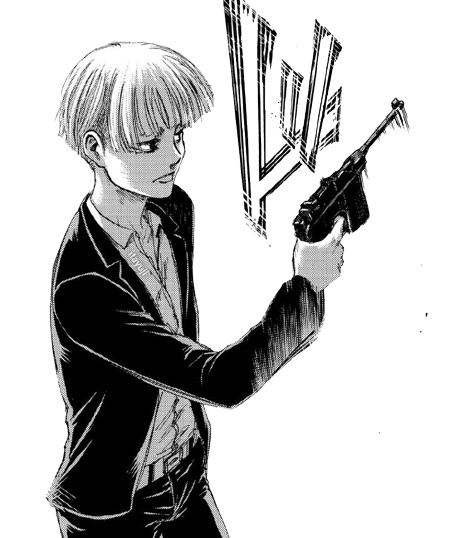
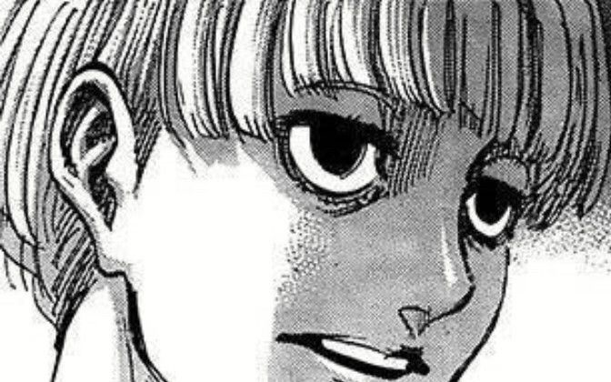
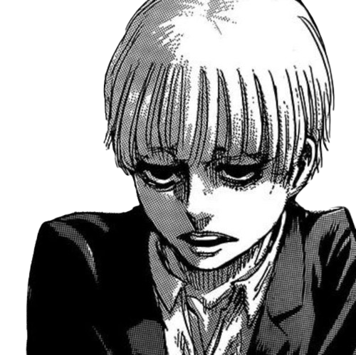
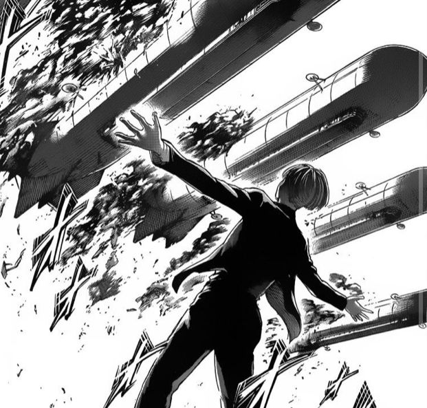

Yelena (イェレナ Yerena?) is the leader of the Anti-Marleyan Volunteers working under Zeke Yeager. She was one of the Marleyan soldiers on board the first survey fleet to Paradis Island after Marley's failed attack operation.

"Two brothers are going to remake the world. I just want to have a good view of the action."


Born into an unassuming family in Marley, Yelena eventually became disillusioned with her own country. After meeting Zeke Yeager, Yelena concocted a plan to solidify herself in history by assisting Zeke in saving the world. As part of her narrative, Yelena created a false background for herself, claiming that her homeland was invaded and conquered by Marley. She was forcibly drafted as a soldier to fight in the Marleyan military, where she met similar-minded soldiers and organized them into the Anti-Marleyan Volunteers to fight against Marley.
Yelena and her Volunteers turned over a stock of Titan serums they stole from Marley to the Garrison. However, they were captured by Pixis who didn't trust them. Yelena was interrogated by Pixis and admitted to her meeting with Eren and expressed her support for Zeke's euthanasia plan. As the conflict between the Yeagerists and the Paradis military erupted, Yelena got involved in the battle and witnessed Zeke coming to aid. However, after Eren's defeat, she was captured by Magath who tortured her for information about Eren. Eventually, Yelena allied with Hange and Magath to find out Eren's next plan, and she was ultimately evacuated from the battle by the Azumabito ship.
